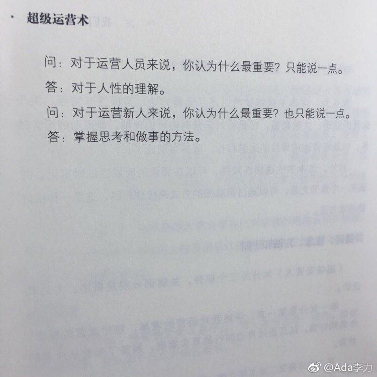

#创业# 以前上班时最讨厌的时间是在上下班的路途上。现在创业至少可以决定办公室位置，上下班不再那么难受，但发现出差还是吐槽最集中的时间。刚刚想了下原因。上下班，出差，都是旅途的一种。到达目的地时间是刚性不可变通的，但旅途中间是否顺利，个人几乎完全不可控。我不喜欢的是这种状态。怪不得大公司会给高管提供私人飞机。
#读书# “对人性的理解；掌握思考和做事的方法”，不单单是运营人员需要。不同职业和岗位的共性地方还是挺多的。通常，某个岗位上做得优秀的人，换个完全不同的岗位，一样可以做得不错。但这种换岗也很成功的例子不多，大量是不成功的案例，比如典型的案例：牛叉销售转岗为管理者，干得一塌糊涂。我是这么理解：如果某个岗位做得很顺利，做得很成功，通常不会转换跑道，所以，优秀人才换哪个岗位都成功的案例，本来就不会多。你知道的大多数转岗案例，都是没头苍蝇一样乱撞的结果。
#创业#70后教育以及工作多年的习惯，会让我把满足别人的需求至于满足自己的需求之上，无意识的决策，通常就是这个结果。得非常有意识地提醒自己，才会将自己的需求优先级拔高。早年读过《穷爸爸富爸爸》，作者罗伯特清崎说过一条原则：先给付自己。无论收入如何，先把自己那份留下，欠别人的，总会找到办法赚到还上。这么多年，每每想到这条原则，还是心里叹息：臣妾做不到啊。亏欠自己，似乎都能挨得下去；亏欠别人，总是良心不安。
我不想要平静呀，我想赢。 //@婴儿考槃在涧:我跟你一样，我觉得这里面可能也有天性在里头。以前我说过一句话：固执/自私者赢得世界，而利他者获得平静。@Ada李力:#创业#70后教育以及工作多年的习惯，会让我把满足别人的需求至于满足自己的需求之上，无意识的决策，通常就是这个结果。得非常有意识地提醒自己，才会将自己的需求优先级拔高。早年读过《穷爸爸富爸爸》，作者罗伯特清崎说过一条原则：先给付自己。无论收入如何，先把自己那份留下，欠别人的，总会找到办法赚到还上。这么多年，每每想到这条原则，还是心里叹息：臣妾做不到啊。亏欠自己，似乎都能挨得下去；亏欠别人，总是良心不安。